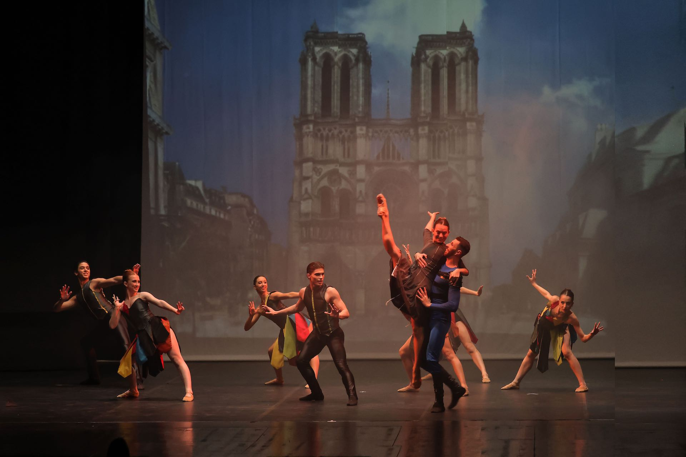

Teatro
Teatro
Il lago dei Cigni
Catania e Palermo
DAL 22 GEN 26 AL 25 GEN 26

Opera popolare musicale di maggior successo in Europa, tratta dal capolavoro di Victor Hugo, mette in scena amori impossibili e drammi sociali sullo sfondo della Parigi del 1482.

Notre-Dame de Paris è uno dei musical più famosi al mondo, tratto dall'omonimo romanzo di Victor Hugo. La versione teatrale, con musiche di Riccardo Cocciante e testi di Luc Plamondon, ha debuttato nel 1998 a Parigi e in Italia nel 2002, ottenendo un enorme successo. Lo spettacolo racconta la tragica storia di Quasimodo, il campanaro della cattedrale di Notre-Dame, della giovane Esmeralda e dell'arcidiacono Frollo, affrontando temi come l'amore, la giustizia, la diversità e il destino. Grazie alle sue musiche coinvolgenti, alle coreografie spettacolari e alle scenografie suggestive, è considerato uno dei musical più apprezzati e rappresentati di sempre.
Palermo
Teatro di Verdura
DA 24 AGO 26 A 6 SET 26
Data:
Da 24 Agosto 2026 al 6 Settembre 2026
Luogo:
Teatro di Verdura • Palermo, 90121
Capienza:
750 persone
I biglietti non sono venduti direttamente su U Spettaculu. Scegli la piattaforma che preferisci.
Teatro
 Teatro
Teatro
 Teatro
Teatro